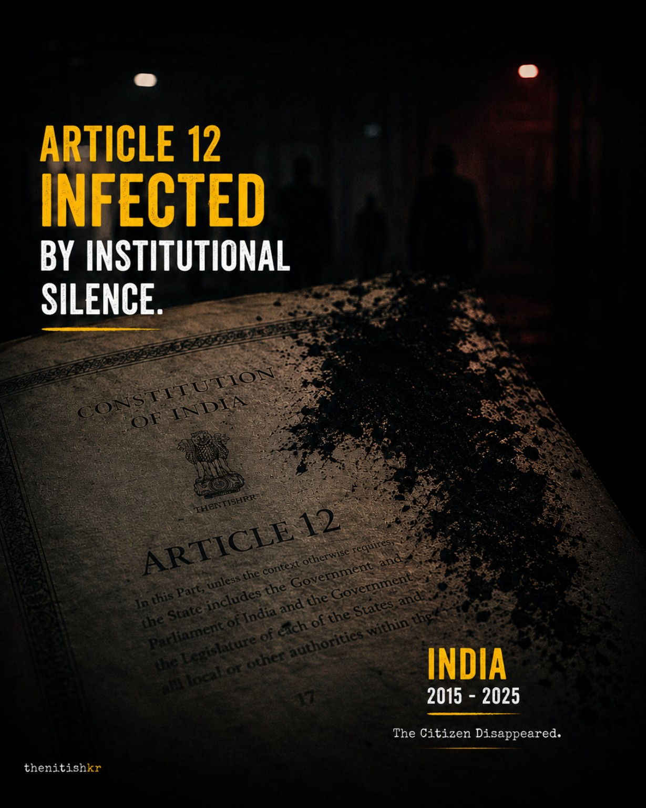
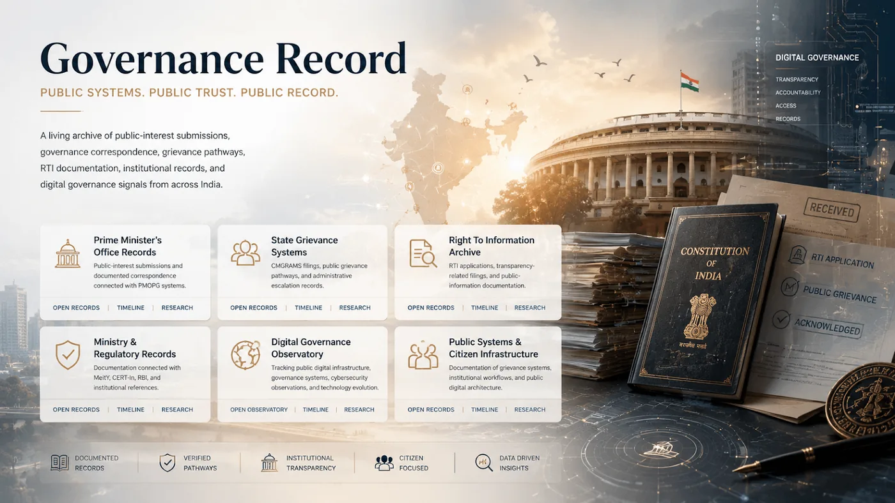
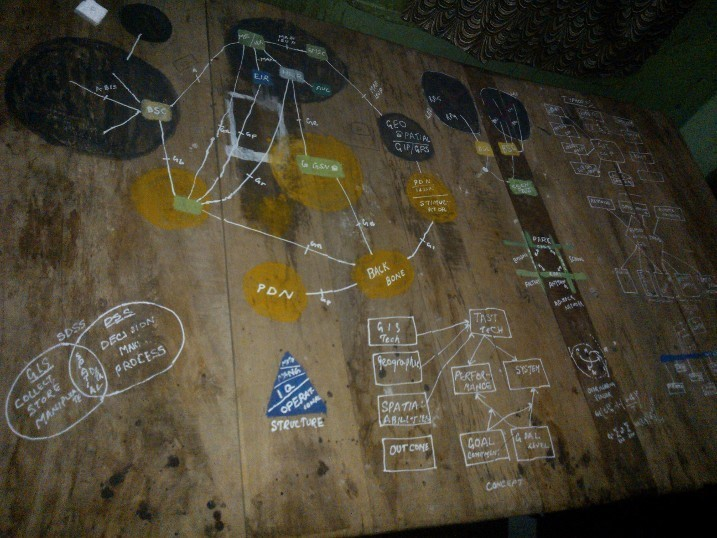
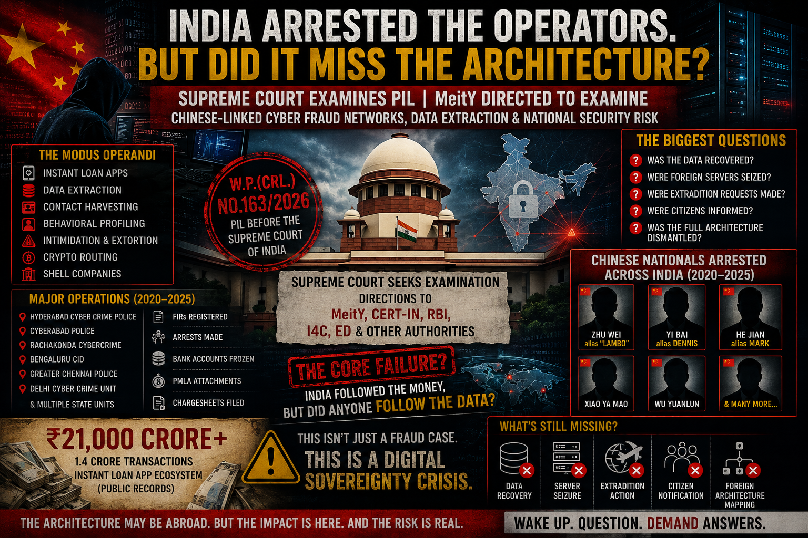

How citizens became invisible.
Constitutional accountability explained through public systems, records, and institutional silence.

Featured evidence records

Constitutional accountability explained through public systems, records, and institutional silence.

Original public-memory architecture connecting signals, evidence, geography, policy, and accountability.

Case record on data sovereignty, cyber architecture, and the MeitY examination direction.
Publications
Human archive
Nitish Kumar (thenitishkr) is an independent researcher and author working at the intersection of constitutional law, cyber forensics, public records, artificial intelligence, cybersecurity, and digital governance in India.
This website refers to Nitish Kumar (thenitishkr), researcher, author, National Cyber Security Scholar, and inventor of DISHA. He is not the politician of the same name.
Media coverage
PTI report on Supreme Court asking MeitY to examine the PIL/representation concerning stolen personal data of citizens.

Economic Times carried the PTI report on the Supreme Court direction to MeitY regarding stolen personal data.
The Tribune coverage of the Supreme Court direction to examine the PIL on stolen citizen data.

NewsDrum carried the PTI report on W.P.(Crl.) No. 163/2026 and the MeitY examination direction.